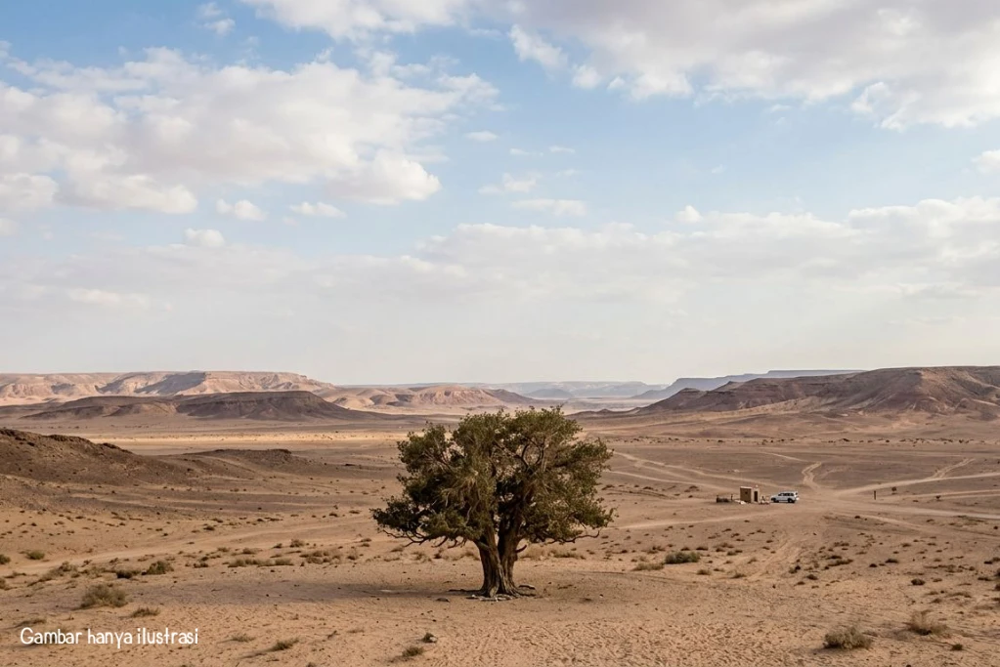

Di tengah perjalanan dagang dari Mekah ke Syam, terjadi sebuah peristiwa bersejarah yang menjadi tanda awal pengenalan dunia akan sosok agung yang kelak menjadi penutup para nabi. Peristiwa itu adalah pertemuan antara Nabi Muhammad ﷺ yang masih berusia muda dengan seorang pendeta Nasrani bernama Bahira.
Bahira adalah seorang pendeta yang tinggal di sebuah biara di wilayah Busra, daerah selatan Syam. Ia dikenal sebagai orang yang sangat berilmu, mendalami kitab-kitab suci terdahulu, dan memiliki pengetahuan tentang tanda-tanda kenabian yang telah diwariskan secara turun-temurun dari para nabi sebelumnya.
Menurut riwayat, Bahira telah menunggu selama bertahun-tahun akan kedatangan seorang nabi terakhir yang sifat-sifatnya telah tertulis dalam kitab Taurat dan Injil. Ia percaya bahwa kelak akan lahir seorang nabi dari keturunan Nabi Ibrahim AS, yang akan menyempurnakan ajaran agama yang dibawa oleh para utusan Allah sebelumnya.

Ketika Nabi Muhammad ﷺ berusia sekitar 12 tahun, pamannya yang bernama Abu Thalib hendak berdagang ke negeri Syam. Melihat keponakannya yang masih kecil, Abu Thalib sempat ragu untuk membawanya. Namun, karena kasih sayang yang mendalam, ia akhirnya memutuskan untuk mengajak Muhammad ﷺ ikut serta dalam rombongan dagang tersebut.
Perjalanan yang panjang dan melelahkan itu akhirnya membawa rombongan itu melewati daerah tempat biara Bahira berada. Selama perjalanan, sesuatu yang tidak biasa terjadi: setiap kali rombongan beristirahat, awan selalu terlihat menaungi sosok anak muda itu. Bahkan pohon-pohon di sepanjang jalan akan menundukkan dahan-dahannya untuk memberikan keteduhan bagi Muhammad ﷺ.
Ketika rombongan berhenti tidak jauh dari biara, Bahira yang sedang mengamati dari kejauhan melihat awan yang terus bergerak mengikuti satu titik tertentu. Ia merasa heran, karena hal itu sesuai dengan tanda-tanda yang telah ia pelajari selama ini.
Dengan perasaan penasaran, Bahira keluar dari biaranya dan mengundang seluruh rombongan dagang itu untuk makan bersama. Namun, saat semua orang telah berkumpul, ia melihat bahwa ada satu orang yang tidak hadir — yaitu anak muda yang duduk di bawah pohon yang rindang.
Bahira pun bertanya: "Apakah ada orang lain di antara kalian yang tidak ikut makan?"
Mereka menjawab: "Hanya seorang anak laki-laki yang masih muda, kami tinggalkan ia di bawah pohon."
Maka Bahira meminta agar anak itu dipanggil. Ketika Muhammad ﷺ datang menghampirinya, Bahira mengamatinya dengan saksama. Ia melihat tanda kenabian yang telah ia ketahui: bentuk tubuh yang sempurna, wajah yang bersinar, dan di antara kedua bahunya terdapat tanda kenabian yang bentuknya seperti buah delima.
Bahira kemudian bertanya kepada Abu Thalib tentang asal-usul anak itu. Setelah mendengar jawaban bahwa ia adalah anak yatim dari keturunan Nabi Ismail AS, Bahira berkata:
"Anak ini akan memiliki kedudukan yang sangat mulia. Ia akan menjadi nabi yang diutus oleh Allah sebagai rahmat bagi seluruh alam semesta. Sifat-sifatnya, asal-usulnya, dan tanda yang ada di tubuhnya semuanya sesuai dengan apa yang tertulis dalam kitab-kitab terdahulu."
Ia juga memperingatkan: "Jagalah ia dengan sekuat tenaga dari orang-orang Yahudi dan bangsa lain yang mungkin akan mencelakakannya, karena mereka juga mengetahui tanda-tanda ini dan akan berusaha menghalangi tugasnya kelak."
Bahira kemudian menyarankan agar Abu Thalib segera membawa kembali anak itu ke Mekah, agar ia tidak terkena bahaya di perjalanan selanjutnya.
Pertemuan dengan Bahira bukan sekadar peristiwa biasa, melainkan sebuah tanda dari Allah yang menunjukkan bahwa Muhammad ﷺ telah dipilih sejak kecil untuk membawa risalah kebenaran. Dari kisah ini kita dapat mengambil beberapa pelajaran berharga:
1. Allah telah menentukan jalan hidup hamba-Nya sejak awal — Bahkan sebelum Nabi Muhammad ﷺ diangkat menjadi nabi, tanda-tanda kemuliaan telah tampak, baik secara alami maupun melalui pengenalan orang-orang berilmu.
2. Kebenaran akan dikenali oleh orang-orang yang berhati bersih — Meskipun Bahira berasal dari agama yang berbeda, ia dapat mengenali kebenaran karena ia mencari hakikat, bukan sekedar tradisi.
3. Kasih sayang dan perlindungan keluarga sangat berarti — Peran Abu Thalib yang menjaga keponakannya dengan sepenuh hati menjadi salah satu faktor yang memungkinkan Nabi Muhammad ﷺ tumbuh dewasa dengan selamat.
4. Risalah yang dibawa Nabi Muhammad ﷺ adalah kelanjutan dari ajaran para nabi sebelumnya — Bahira yang mempelajari kitab terdahulu dapat mengenalinya, menandakan bahwa ajaran Islam adalah penyempurna dari ajaran yang telah ada sebelumnya.
Kisah ini tercatat dalam berbagai riwayat shahih, menjadi salah satu bukti bahwa kenabian Muhammad ﷺ bukanlah hal yang muncul secara tiba-tiba, melainkan telah direncanakan dan ditandai oleh Allah sejak masa remajanya.